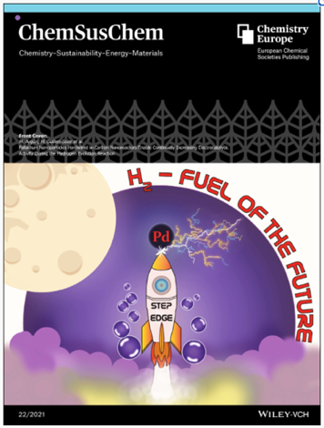
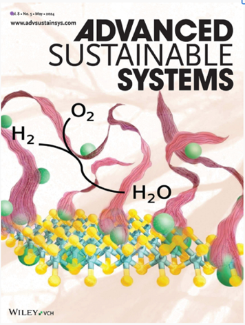
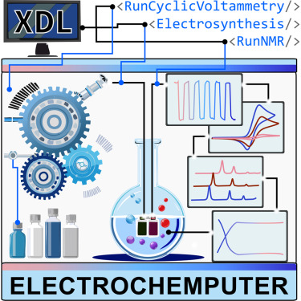

About Me
My career has strategically built an interdisciplinary profile at the forefront of digital chemistry, integrating materials science, electrocatalysis, chemical automation, and AI for sustainable energy discovery. I specialize in the development of automated platforms for the controlled stimulus of electro- and photochemistry, utilizing integrated analytical feedback to drive autonomous discovery.
During my PhD, I pioneered automated in-situ analysis to understand complex electrochemical processes at nanointerfaces, leading to a real-time gas monitoring device and a granted patent. I also designed an in-flow electrochemical cell for the ALBA synchrotron enabling real-time electrocatalysis and XANES measurements, complemented by Raman, X-ray spectroscopy and confocal microscopy studies. This research produced four publications, two papers in progress, and two patents.
My postdoctoral work at the University of Glasgow expanded into digital chemistry with the ElectroChemputer, the first universal framework for programmable electrosynthesis. This platform features integrated analytical feedback, specifically real-time NMR monitoring in continuous flow, to execute 15 reaction classes in parallel, as published in Chem (2026). Since September 2024, I have served as Postdoctoral Researcher and Team Leader of the Chemputer Reactivity Team in the Cronin Group. In this leadership role, I manage multidisciplinary projects focused on advancing reactivity and chemical discovery through robotics. Furthermore, my research focuses on the integration of electrochemical and photochemical modalities into automated platforms with real-time analytical feedback.
Outside the lab, I enjoy bringing science to life through illustration, video editing, and 3D modelling. Some of my artwork has even made it onto the front covers of scientific journals.


Research
My research connects digital chemistry, robotic experimentation, electrochemical methods, and materials discovery. I am interested in systems where hardware, chemical reactivity, analytical feedback, and algorithmic decision-making can be treated as one programmable experimental workflow.
- Programmable electrochemistry and electro-photo-chemical platforms
- Robotic workflows for reproducible chemical synthesis and analysis
- Polyoxometalate materials, electrocatalysis, and energy-related chemistry
- Data-rich experimental design for automated discovery
Recent Updates
- 2026: ElectroChemputer with integrated monitoring for programmable electrochemistry published in Chem.
- 2025: Work on compression of molybdenum blue polyoxometalate cluster rings published in Journal of the American Chemical Society.
- 2024: Algorithm-driven robotic discovery of polyoxometalate-scaffolding metal-organic frameworks published in Journal of the American Chemical Society.
Selected Publications
-

ElectroChemputer with integrated monitoring for programmable electrochemistry . Chem, 2026.
-
Compression of molybdenum blue polyoxometalate cluster rings . Journal of the American Chemical Society, 2025.
-
Adaptive catalytic nanointerfaces for controlled hydrogen evolution: an in situ electrochemical approach . Advanced Science, 2025.
-
Algorithm-driven robotic discovery of polyoxometalate-scaffolding metal-organic frameworks . Journal of the American Chemical Society, 2024.
-
Reaction: Programmable chemputable click chemistry . Chem, 2024.
A full and regularly updated publication list is available through Google Scholar .
Projects
Selected research projects and associated resources will be collected here. For now, see my GitHub profile and linked research repositories.